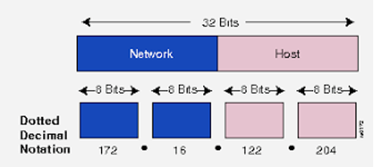

Okay, we had a talk about domain name and who manages it, now you know how you get the website when you click “www.google.com” to you web browser. Now, we will go a little bit deeper into the internet world, we will discover the true identity of the domain names – the IP address.
Okay, as its name, you must have figure it out that first of all it’s an address. But can you drive there? Well, if you can, tell me. IP (Internet Protocol) Address is an address of your network hardware. It helps in connecting your computer to other devices on your network and all over the world. An IP Address is made up of numbers or characters.
Your IP address at home will be different from the IP address at your work office. And that IP address will be different from the one you would have if you used the free wireless hotspot at a coffee shop or hotel. But they all have one thing in common: They will be in four sections, separated by three periods or dots. That is the common structure for all IPv4 addresses (v4 stands for "version 4").
Depends on the type of the IP address, we have different structure, but the common thing is that they have the network part and the host part. Unlike human, computers only understand binary numbers, therefore, the IP address you see every day is the transformation of the binary number to decimal number. For IPv4, there are 32 bits which are divided into 4 parts, each part has 8 bits. The maximum number of IP for IPv4 is 232. Nowadays, due to the needs of more IP addresses, a new version of IP address is used – IPv6, which uses 256 bits to represent the IP address.
So how does your information transport from your computer to others? How do they know where to go and do they have maps or vehicles to traffic? This used to be a very big problem for internet architectures, because of the number of users and the transmission rate and distance. So, how? It will be really hard to transfer all of your files in the internet at once, this’s not impossible but I would take a lot of time if you have to transfer multiple files to multiple places.